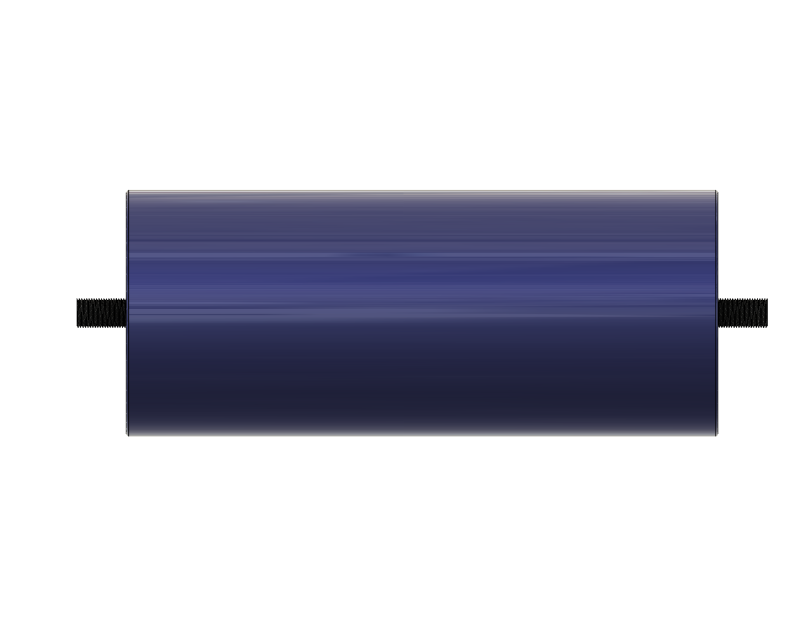
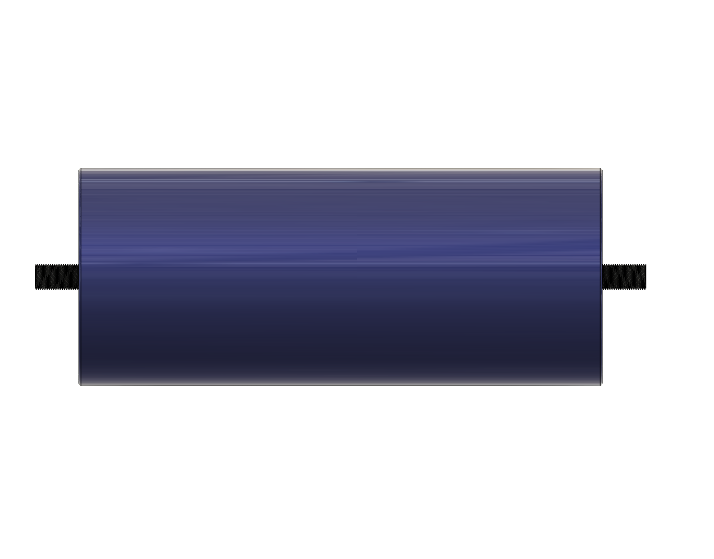
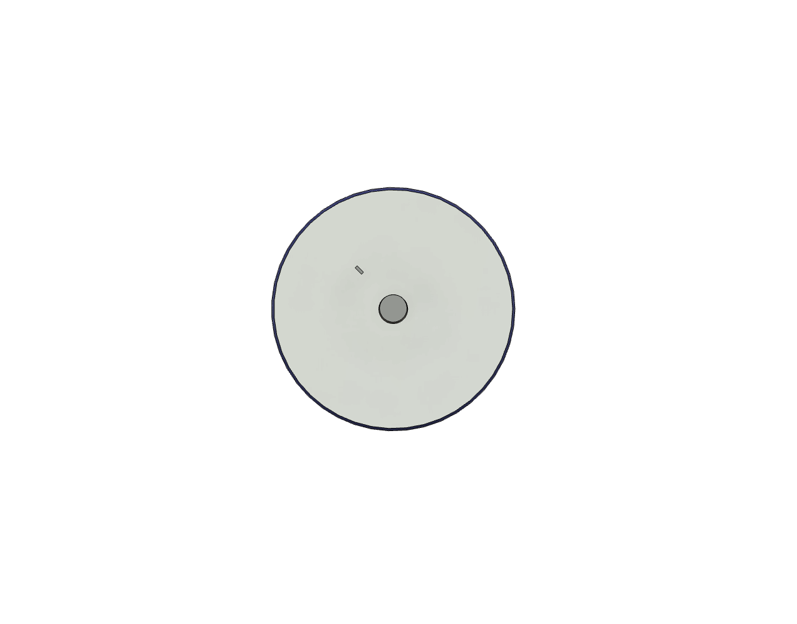

Zastosowania
Superkondensatory znajdują szerokie zastosowanie w obszarach wymagających szybkiego ładowania i dostawy energii. Wykorzystywane są w pojazdach elektrycznych do wspomagania baterii, w systemach rekuperacji energii (np. w hamulcach regeneracyjnych) oraz w aplikacjach takich jak zasilanie awaryjne, stabilizacja napięcia czy urządzenia przenośne. Dzięki swoim właściwościom są idealne w sytuacjach, gdzie wymagana jest wysoka gęstość mocy i trwałość cykliczna.
Budowa fizyczna
| Element | Opis |
|---|---|
| Elektrody | Wykonane z materiałów o wysokiej powierzchni właściwej, takich jak węgiel aktywny, zapewniają dużą pojemność. |
| Separator | Cienka membrana oddzielająca elektrody, przepuszczająca jony, ale izolująca elektrycznie. |
| Elektrolit | Płynny lub stały, umożliwiający przepływ jonów pomiędzy elektrodami. |
| Obudowa | Hermetyczna konstrukcja chroniąca przed czynnikami zewnętrznymi i utrzymująca stabilność struktury. |
Zalety i wady
| Kategoria | Opis |
|---|---|
| Zalety |
|
| Wady |
|